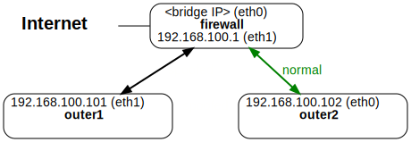

Overview
In this assignment you will experiment with ARP spoofing. You will use the built-in arpspoof command, both to intercept traffic and to perform an in-the-middle attack. You will also write your own ARP spoofing detector.
This assignment is to be done in Python, and uses the scapy library. If you are developing it on your own computer, you should install scapy via pip (or pip3): pip install scapy.
DO NOT EXECUTE THE arpspoof COMMAND ON UVA’S NETWORKS!! You can use the Docker container setup for that.
You will need to be familiar with the ARP, ARP spoofing, and Detection and Prevention sections of the Link Layer slide set.
You will be submitting one code file as well as arp.py (src).
Changelog
Any changes to this page will be put here for easy reference. Typo fixes and minor clarifications are not listed here. So far there aren’t any significant changes to report.
Built-in Commands
There are a few commands installed that we are going to use.
arp
arp will allow us to see and manipulate the contents of the ARP cache. Running arp -a will display the cache:
root@outer1:/# arp -a
outer2 (192.168.100.102) at 02:42:c0:a8:64:66 [ether] on eth1
metasploit (192.168.100.3) at 02:42:c0:a8:64:03 [ether] on eth1
gateway (192.168.100.2) at 02:42:c0:a8:64:02 [ether] on eth1
firewall (192.168.100.1) at 02:42:c0:a8:64:01 [ether] on eth1
outer3 (192.168.100.103) at 02:42:c0:a8:64:67 [ether] on eth1
root@outer1:/#
If you just connected to that container, there may be nothing in the ARP cache. Run ping -c 1 <host> on a few hosts (outer1, outer2, gateway, inner, etc.). The ping process will obtain the ARP mapping; running the arp -a command again will now show entries in the cache.
You can clear entries in the cache via -d: arp -d <ipaddr>. If you are running this on your own machine, you will have to put sudo before it to run it as the super-user. The entries have to be deleted one at a time.
netdiscover and arp-scan
netdiscover will query all the hosts on the sub-net, and display their MAC addresses and IP addresses. However, it does not populate the ARP cache. And then it will send out ARP requests to all the hosts on all other sub-nets – this can take quite some time. We can limit that to a given sub-net via the -r argument: -r 192.168.100.0/24.
Here’s an execution run on outer1:
root@outer1:/# netdiscover -r 192.168.100.0/24 -P
_____________________________________________________________________________
IP At MAC Address Count Len MAC Vendor / Hostname
-----------------------------------------------------------------------------
192.168.100.1 02:42:c0:a8:64:01 1 42 Unknown vendor
192.168.100.2 02:42:c0:a8:64:02 1 42 Unknown vendor
192.168.100.3 02:42:c0:a8:64:03 1 42 Unknown vendor
192.168.100.102 02:42:c0:a8:64:66 1 42 Unknown vendor
192.168.100.103 02:42:c0:a8:64:67 1 42 Unknown vendor
-- Active scan completed, 5 Hosts found.
root@outer1:/#
In the example shown, the -P option was added that improves formatting for this assignment – you probably won’t want to use the -P option when you run it.
arp-scan works similarly: it will send ARP requests to the hosts, but not populate the ARP cache. Using the -l option (arp-scan -l) will only scan the local network.
Below we will be using a few more options to get the format correct: -q for quiet (suppresses extra output), and -x for plain (another output formatter). Note that arp-scan -l -x -q is equivalent to arp-scan -lxq:
root@outer1:/# arp-scan -lxq
192.168.100.1 02:42:c0:a8:64:01
192.168.100.2 02:42:c0:a8:64:02
192.168.100.3 02:42:c0:a8:64:03
192.168.100.102 02:42:c0:a8:64:66
192.168.100.103 02:42:c0:a8:64:67
root@outer1:/#
Both of these commands may have to be run with sudo if you are not running it in the Docker container.
ARP Spoofing
We are going to execute two different ARP spoofing attacks. Before each of them, you may want to clear the ARP cache via arp -d, as explained above.
Basic ARP spoofing attack
The first task is to experiment with the arpspoof command that is already installed on the Docker images. This part will go through the same steps that were gone over in the lecture slides, which are repeated here.
We will be using the course Docker setup, and will be changing first image (normal operation) to the second image (spoofed operation).
 
Load up 5 tabs:
- Tab 1: run the docker setup:
docker compose up
- Tab 2: connect to outer1 and run:
arpspoof -i eth1 -t 192.168.100.102 192.168.100.1
- Tab 3: connect to outer1 and run:
arpspoof -i eth1 -t 192.168.100.1 192.168.100.102
- Note that the IP addresses are reversed in that second command!
- Tab 4: connect to outer1 and run:
urlsnarf -i eth0
- This will display URLs it sees in the intercepted packets
- Tab 5: wait a minute, then connect to outer2 and run:
wget -q http://google.com
At this point, you should see the URL chosen (http://google.com) output by the urlsnarf program. There is an noticeable delay by urlsnarf, so it may take a while (10 seconds or so) for the URL to display.
If you run wget on outer2 with an https:// command, notice that an https:// address will not appear in the urlsnarf output – the packet is encrypted with AES, so urlsnarf cannot see that it’s a URL request therein.
MITM ARP spoofer
Next we are going to execute the MITM (in-the-middle) attack via an ARP spoof; this is as shown in the slides as well. We are going to ARP spoof metsploit via outer1.

- First, turn off IP forwarding:
echo 0 > /proc/sys/net/ipv4/ip_forward
- Clear out the ARP cache, via
arp -d, as explained above
- Run
arpspoof in two terminals on outer1.
arpspoof -i eth1 -t 192.168.100.3 192.168.100.1arpspoof -i eth1 -t 192.168.100.1 192.168.100.3
- Download the arp_mitm.py (src) file
- Run that file on outer1
- Connect to firewall via
docker exec. If you connect via ssh, then that will (correctly) populate the ARP cache, negating our hack.
- From firewall, ssh into metasploit (
ssh msfadmin@metasploit, password is msfadmin).
- Type
echo foo into the terminal. The response will be bar.
Packet interception
We are going to use the scapy Python library to intercept all packets. For this part, we are not modifying the packets. We saw something similar in the arp_mitm.py (src) from above:
def spoof_pkt(pkt):
# code omitted from this listing, but in the original arp_mitm.py file
filter = "tcp and (ether src " + FIREWALL_MAC + " or ether src " + VICTIM_MAC + ")"
pkt = sniff(iface='eth1', filter=filter, prn=spoof_pkt)
Notes:
scapy only has permission to intercept packets if it is running as the root user. On the Docker containers, everything runs as root. But if you are trying to run this on your own machine, you will have to put sudo in front of the command.- The
spoof_pkt() is passed the packet by the sniff() function.
- The
filter parameter to sniff is a (mostly) English description of what packets the function (via the prn parameter) should be called on. To sniff all arp packets, use ‘arp’ as the filter. The full description of the filter language can be found here, if you are interested.
- To get a part of the filter, you pass the name of the part in as an array index:
packet['Ether'] or packet['ARP'], for example
- ARP packets have two source addresses, protocol (IP) and hardware (MAC), called
psrc and hwsrc, respectively. Likewise the destination filters are pdst and hwdst.
- Thus, to get the MAC address it came from, use
packet['ARP'].hwsrc
- Note that the interface used (here,
eth1) has to be a command-line parameter in the code you write below.
Spoof Detector
Having experimented with ARP spoofing, we are going to write an ARP spoofing detector. Testing for this is described below. The result of this part should be in a file called arpDetector.py.
Overview
Your program should do the following:
- Read the interface from the first command line parameter.
- Read the list of ARP mappings that the computer currently has from
arp -a.
- Read a file called
arp-settings.txt that also provides IP-MAC mappings.
- Listen for ARP messages, and print out various messages, described below. The output is very specific!
- Keep running indefinitely; we’ll use Ctrl-C to terminate the program.
Step 1: read interface from command line
This is critical! Whatever the interface is where you are testing it – likely en0, eth0, or eth1 – that is NOT going to be the interface when we test it. You are welcome to have a default if no parameter is specified. But the first command line parameter is the interface to pass to the iface parameter of sniff().
Step 2: read from system
You have to read in the current ARP mappings, of IP <-> MAC, that the computer has in cache (not via arp-scan or similar, as that is not the ARP cache). If you run arp -a, you will get something similar to the following:
root@outer1:/# arp -a
outer2 (192.168.100.102) at 02:42:c0:a8:64:66 [ether] on eth0
metasploit (192.168.100.3) at 02:42:c0:a8:64:03 [ether] on eth0
gateway (192.168.100.2) at 02:42:c0:a8:64:02 [ether] on eth0
firewall (192.168.100.1) at 02:42:c0:a8:64:01 [ether] on eth0
outer3 (192.168.100.103) at 02:42:c0:a8:64:67 [ether] on eth0
root@outer1:/#
You can run this via the subprocess module to capture the input. Or you can redirect to a file, then read that file (then delete that file). Note that in the arp -a output above, the MAC address will be the 4th item, and the IP address will be the 2nd item. Also note that the IP address has parentheses around it.
This step should produce no output on a successful run. If the program runs into an error, then you can print out whatever output you want.
Step 3: read from file
Next we need to read in a file that contains mappings. This file may not exist, or it may be empty. Here is a sample file, which is the typical set of MAC addresses for the outer network of the docker setup.
# ARP spoofing file
# mappings of the hosts on the outer network in the docker setup
# what is below was generated by `arp-scan -l -x -q`
192.168.100.1 02:42:c0:a8:64:01
192.168.100.2 02:42:c0:a8:64:02
192.168.100.3 02:42:c0:a8:64:03
192.168.100.101 02:42:c0:a8:64:65
192.168.100.103 02:42:c0:a8:64:67
There are three types of lines:
- A comment will have the hash symbol (
#) as the first character; in this case, ignore that line. You only need to check the first character of a line for this symbol.
- An empty line is ignored.
- A mapping line will have two values. The first is the IP address, and the second is the MAC address (either upper-case or lower-case hex). They are separated by some amount of white space (space(s), tab(s), or a combination thereof). These lines can be generated by
arp-scan -l -q -x, so there may be more than one space or tab separating the two values.
In particular, the mappings in this file may overwrite the mappings from the previous step – this is intentional, as this can be used when testing the program. You can assume the file, if it exists, will match the format above – meaning it will not have errors. Note that it can be an empty file, though, or it may not be present.
If one of the mappings in the arp-settings.txt file is different than what you obtained from arp -a, then you should output the appropriate message (described below), and overwrite the value in the map with what was in the arp-settings.txt file. Otherwise, if there are no conflicts, there should be no output from this step. If the program runs into an error, then you can print out whatever output you want. The file not being present, or the file being empty, is not an error, and should not produce any output.
Step 4: monitor the network
In this step, you will listen to the network for ARP messages – use the scapy library, as discussed in lecture for this.
Your program should produce two types of output for this part:
If a new ARP mapping is observed, the print out a line stating so:
New mapping: 192.168.100.101 -> 02:42:c0:a8:64:65
This is the “mapping detector” part.
If a ARP packet is received where the MAC and IP therein do NOT match what is in the program’s mapping, the you should output the following line:
Possible ARP attack detected: 192.168.100.102 may be pretending to be 02:42:c0:a8:64:02
This is the “spoofing detector” part,
As this part of the assignment will be auto-graded, you have to have that exact output. To ensure you have the exact right output, the following functions are provided that you should use.
def outputNewMapping(mac,ip):
print ("New mapping: " + str(ip) + " -> " + str(mac).lower())
def outputARPConflict(mac,old_ip,new_ip):
print ("Possible ARP attack detected: " + str(old_ip) + \
" may be pretending to be " + str(new_ip) + \
" for MAC " + str(mac))
Step 5: keep running
Your program should keep running until Ctrl-C is pressed, which will terminate the program – you don’t have to put in any code to terminate on a Ctrl-C.
You can also send a signal to the program that is the equivalent of Ctrl-C. First, you have to find the process number of the running program:
$ ps aux | grep arpDetector
This may print out multiple lines of processes, but one of them is going to be the process line. (The others may be the grep line, or the sudo line, if you have to run it with sudo). For example:
$ ps aux | grep arpDetector
root 62439 0.1 0.2 409569856 63728 s001 S+ 9:09AM 0:00.56 /opt/homebrew/Cellar/python@3.11/3.11.6_1/Frameworks/Python.framework/Versions/3.11/Resources/Python.app/Contents/MacOS/Python arpDetector.py
mst3k 63076 0.0 0.0 408626944 1328 s004 R+ 9:09AM 0:00.00 grep arpDetector
root 62436 0.0 0.0 408642048 9568 s001 S+ 9:09AM 0:00.02 sudo python3 arpDetector.py
$
You can then send Ctrl-C to the process via:
$ sudo kill -SIGINT 62439
This is how we will be doing it in the automated testing. Replace the process number with the one specific to your process. Note that you don’t have to include any code to handle Ctrl-C.
Testing and Hints
To test this, first find the IP -> MAC addresses on the Docker network. We used the outernet network (outer1, outer2, etc.), as that had more machines to manipulate the ARP cache with. You can view the ARP cache via arp -a, or from step 1 above. You can find the mappings by running sudo arp-scan -l. This program is already installed on the docker images; you can install it under Linux via sudo apt install arp-scan, and on a Mac via brew install arp-scan.
To test the new mapping detection, run it on one of the containers. Clear out the ARP cache via arp -d. In another terminal and in the same container, ping a few other nodes from that container. Each time, your program should print out that it found a new mapping. Check that those IP -> MAC mappings are in the ARP cache via arp -a. Then, in a different container, run an ARP spoof via arpspoof. Your program should print out that it detected a possible ARP spoof.
Example output
root@outer1:/# arp -a
root@outer1:/# python3 arpDetector.py
New mapping: 192.168.100.101 -> 02:42:c0:a8:64:65
New mapping: 192.168.100.103 -> 02:42:c0:a8:64:67
Possible ARP attack detected: 192.168.100.102 may be pretending to be 192.168.100.1 for MAC 02:42:c0:a8:64:66
Possible ARP attack detected: 192.168.100.102 may be pretending to be 192.168.100.1 for MAC 02:42:c0:a8:64:66
Possible ARP attack detected: 192.168.100.102 may be pretending to be 192.168.100.1 for MAC 02:42:c0:a8:64:66
^C
root@outer1:/#
NOTE: These are not extensive tests, and we will be providing more comprehensive tests when we test your program. These two tests are mean to get you started with testing your program.
Notes and Hints
- Note that the network interface is differnet on the different containers. Because outer1 is on two networks, the outernet network (192.168.100.1/24) is
eth1. As outer2 is only on one network, the outernet network (192.168.100.1/24) is eth0.
- To clear the entire ARP cache from a container, you have to run
arp -a, followed by a number of arp -d calls. Here is a single command that will clear it out for you, and then display the (empty) ARP cache: arp -a | sed s/\(//g | sed s/\)//g | awk '{print "arp -d "$2}' | bash;arp -a
Submission
You will be submitting your arpDetector.py file, as well as arp.py (src). That arp.py file describes, in the comments, what needs to be filled in.
{kind=link}